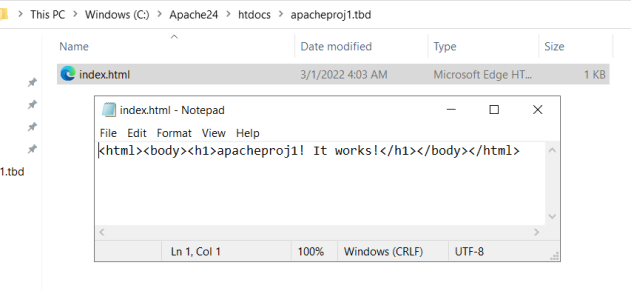

Apache Installation Instructions
Step 1: Configure IIS (if installed)
Apache listens for requests on TCP/IP port 80 so you’ll need to uninstall or disable any programs that uses that port.
If you have any other server software installed, you may already have IIS activated.
If you want to use Apache, you can either remove IIS as a Windows component or you can disable it either in the gui or in services.
Go into the start menu and type in Services...then scroll down to World Wide Web Publishing and see if it is running
If it is running you can roght click on it and click 'STOP'. This will disable the running service and allow you to run Apache.
Step 2: Download the files
We’re going to use the Windows binary from Apache Lounge.
It’s provided as a manually installable ZIP file from www.apachelounge.com/download/.
You should also download and install the Windows C++ runtime from Microsoft.com.
You may have this installed already if you've run other servers, but there is no harm installing it again.
As always, remember to virus scan all downloads.
Step 3: Extract the Files
We’ll install Apache in C:/Apache24, so extract from the ZIP file and copy the embedded C:/Apache24 folder to the root of the C:/ drive.
Step 4: Install Apache as a Web Service
We need to open a command prompt in Administrator mode. When there, we can switch to the C:/Apache24/bin folder and run the command below
This sets up Apache24 to run in Windows services as we need to restart the process a lot when developing
We can now go into Windows Services and see the Apache24 service is running
And if we go to our default browser and type localhost/ in the web address window it should return the default Apache index page below
Step 5: Configure Apache and Test
Apache is configured with the text file c:/Apache24/conf/httpd.conf contained in the Apache folder. Open it with Notepad or any other text editor.
There are several lines you should change for production environment
We can see that by default the SRVROOT is set to C:/Apache24...if you installed it elsewhere you would need to change the path here to wherever you installed.
We also see that the Listen in the file is configured to listen on various ports...it is set up by default for port 80 but we have added 443 as well.
We also need to go almost to the bottom of the text file and uncomment the httpd-vhosts.conf line.
We are going to create 2 simple sites to test our Apache install. apacheproj1.tbd and apacheproj2.tbd
We added the following code to the C:/Apache24/conf/extra/httpd-vhosts.conf file
The first line is the port, the next is out IP addrss and then the last one is our server name
Next we need to go into the C:/Apache24/htdocs folder and ceate 2 new folders matching your DocumentRoot folder names from above
In each of these folders you'll create an index.html file and edit it with the code shown below (changing the names of course)
The 2 lines were added at the bottom to the C:/Windows/system32/drivers/etc/hosts file to configure the localhost IP address for the 2 new sites.
Before attempting to hit the websites thru our browser we need to restart our Apache24 in Services
We go into out browser and type in the web address and it should hit out index.html file for each new website